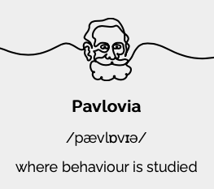
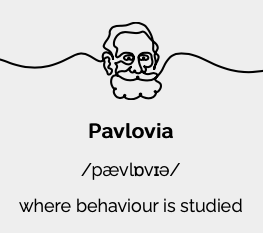

Workshop 1 Open Science
In this workshop I will first introduce you to the key concepts in open research, and talk about the so-called “replication crisis” in the Psychological, Biomedical, and Life Sciences that has resulted in the Open Research movement. I will also discuss the importance of adopting reproducible research practices in your own research, and provide an introduction to various tools and processes you can incorporate into your own research workflows that will allow you to conduct reproducible research.
Like the other workshops in this series, this one involves a mix of recorded videos, narrative, and links to various resources for you to explore and to read.
1.1 Open Research and Reproducibility
First I’d like you to watch the following video on the history of the replication crisis and the issues which have motivated a move towards the adoption of open and reproducible research practices. The video covers the so-called replication crisis in the biomedical sciences, issues around open research, and summarise some of the initiatives (including the UK Reproducibility Network) that have been established to address the fundamental problems around open research, transparency, and reproducibility in science.
Before watching the next video, please have a read through the following paper by Ioannidis (2005) which arguably started the conversation around reproducibility that has had such an impact on research in Psychology and across the Biomedical sciences for the last few years. Clicking on the image below will take you to the paper.
Bishop (2019)
This post by Dorothy Bishop in 2019 nicely captures the situation a number of years later. Clicking on the image below will take you to the paper.
1.1.1 How to do Reproducible Research
One of the biggest challenges facing researchers who are used to the old way of conducting research is that they feel that they don’t have the knowledge or technical skills to adopt open and reproducible research practices. But it’s not that hard! Before you run your experiment, you can pre-register your hypotheses so that when you come to analyse and write-up your results, you can demonstrate that your predictions really were made in advance of data collection. You can also make your research data open (and FAIR) alongside your code so that others can recreate your analyses. And by posting your research article on a pre-print server (such as PsyArXiv or bioRxiv) before submission to a journal, you make your research findings available to all. The adoption of open source software such as R, also means that any research findings you produce can be re-produced by others who can access your data and code. This principle of using open tools to allow us to produce open (and reusable) data and code is the fundamental philosophy behind all of the workshops in this unit.
Take the time to read the following paper, it’s a great guide to the various things you can do to make your own research more open. Just click on the image to open the paper.
1.2 Experimental Power
We are now going to look at the issues around experimental power (and why it is important). One of the insights revealed by the “replication crisis” is that very often research is underpowered for the effect size of interest (i.e., even if the effect is there, your experiment is unlikely to find it). Even when underpowered studies do reveal the effect of interest, the effect size itself will be over-estimated (thus causing problems for future work that might base their power estimates on this incorrect effect size estimate).
One solution to the challenge is to conduct data simulation as part of the experimental design process. There are many ways to do this using R, and there are several packages on CRAN (the Comprehensive R Archive Network) that provide functions to simulate data for different kinds of designs.
If you’re interested in reading more about power, you might like to take a look at this classic “Power Primer” paper by Jacob Cohen.
1.3 Open Source Software
If you want to produce open and reproducible research, you should be using open source software in your workflow. Research produced using proprietary software cannot be easily reproduced by others.
Open source software is software that is licensed to be free to modify, remix, and improve. It is usually free to use, and is centred on the principles of open exchange, collaborative participation, rapid prototyping, transparency, meritocracy, and community-oriented development. The move towards open source began in the early 1980s partly because of a printer and developed further that decade in the form of the Free Software Foundation established by Richard Stallman. In the late 1990s, the Open Source Initiative was launched to raise awareness and adoption of open source software, and build bridges between open source communities of practice.
Open source software is made by many people and distributed under an OSD-compliant license which grants all the rights to use, study, change, and share the software in modified and unmodified form. Software freedom is essential to enabling community development of open source software.
There is a huge amount of open source software available - some of which you will find useful both in the context of this unit, but also in the context of how you study, and in how you conduct your research.
Below is an interesting CNBC video discussing the rise of Open Source Software - it ends with mention of the need to collaborate in an open manner on global challenges such as the environment, cancer, and Alzheimer’s disease.
1.3.1 Statistical and Scientific Computing
R and RStudio Desktop
It goes without saying that R and RStudio Desktop are the two most obvious examples of open source software that are relevant to this course. In terms of other open source languages used for data analysis and statistical modelling, you might also be interested in Python and Julia.
Python
While R tends to be the go-to language for people who are interested in data wrangling, data visualisation, and statistical modelling, Python is arguably the ‘better’ language in the sense it is more general purpose. Python is used widely by the machine learning community (to name just one example).
Octave
You may have heard of - or even used - MATLAB for numerical computing. There is an open source equivalent, called GNU Octave, that you may be interested in checking out.

1.3.2 Document Creation
Up until this time you’ve probably mainly used Microsoft Word for writing documents. LibreOffice is a great open source equivalent to the Microsoft Office suite and offers a huge range of applications for document writing, working with spreadsheets, and the creation of presentations.

If you’re interested in writing using Markdown (which is really easy to get to grips with), you might be interested in using HackMD. HackMD is a Markdown editor that critically allows you to write collaborative documents and presentations with others.

1.3.3 Building Experiments
PsychoPy offers a great open source solution to build experiments to collect human data, and via the companion hosting site Pavlovia provides an easy to use method for running the PsychoPy experiments online. PsychoPy has been around for a number of years and has lots of pre-built experiment templates that you can adapt as needs be. There is a great reference that describes the PsychoPy environment here.
 

1.3.4 Linux
One of the most widely used pieces of open source software is the Linux operating system. Rather than running your computer on Windows, or Mac OS, you could choose to run it using Linux. Linux runs the majority of the internet servers in world is becoming increasingly popular in academic settings. Linux refers to a bunch of open source Unix-like operating systems. It was developed and released by Linus Torvalds in 1991.

Some of the most popular distributions of Linux are Ubuntu, Fedora, and Debian. If you really want to get into the computational side of research, it’s important to discover the world of Linux.
1.3.5 More Reading
If you’re interested in other examples of open source software, you might be interested in having a look at this list of open source alternatives on the Tech Radar site.